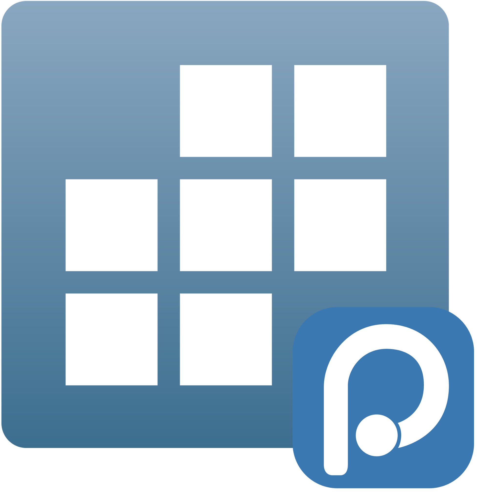

Stata for Positron
STATA for Positron
positron-stata is a Positron-native Stata extension that preserves the proven Python MCP and session logic from hanlulong/stata-mcp while replacing the outer extension shell with the runtime/session architecture compatible with Positron IDE.

Key Features
Console

Interactive Stata console backed by the MCP server, showing session startup and the prompt for running commands.
Data Explorer

Interactive data viewer showing variables, brief summaries and a spreadsheet-like table for browse output. It also support display variable label as a tooltip, summary statistics and filtering data
DO-file Editor & Syntax

Stata .do file editor with syntax highlighting, inline execution controls, and integrated results.

Add a completion provider per Trigger sugestion, providing variable list and label
Environment & Plots

Session variables and Plots pane — exported Stata graphs render directly inside Positron.
Help Pane

Rendered Stata help topics with syntax, options and examples available inline in the Help pane.
History

Command history panel that preserves executed commands and can re-run or send commands back to the console.
Inline Output (Quarto)

Preview of Stata output embedded inline in Quarto (.qmd) documents — rendered code results and plots appear directly alongside narrative text.
Requirements
- Positron IDE with extension API support compatible with VS Code
^1.99.0 - Stata 17 or later installed locally
- Node.js and npm for extension development
- Python 3.9+ plus
uvfor the bundled server environment
On first launch the extension can provision its own Python environment via python/check-python.js. The script prefers uv, creates .venv, installs python/requirements.txt, and stores the resolved interpreter in .python-path.
Attribution And Licensing
This project intentionally reuses upstream logic from hanlulong/stata-mcp.